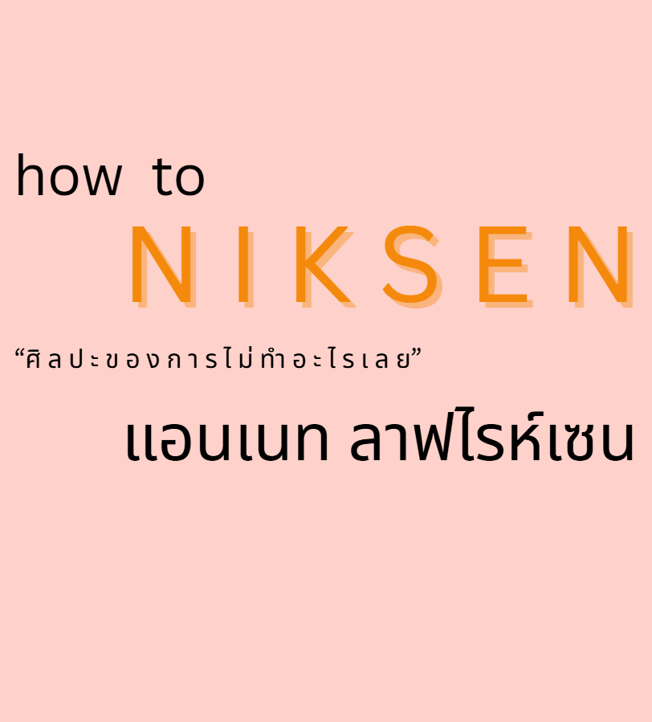

คำว่า “ศิลปะของการไม่ทำอะไรเลย” ชวนให้เรากลับมาทบทวนว่า การพักผ่อนอย่างมีคุณภาพ มีความสำคัญเพียงใดในโลกที่เต็มไปด้วยความเร่งรีบและความคาดหวัง หนังสือเล่มนี้สะท้อนให้เห็นว่า ความเหนื่อยล้าและภาวะหมดไฟ ไม่ได้เกิดจากการทำงานไม่พอ แต่เกิดจากการที่เราไม่เคยให้โอกาสตัวเองได้ อยู่กับตัวเอง และพักอย่างแท้จริง เมื่อเราเริ่มให้เวลาใจได้สงบ และให้สมองได้หยุดพัก เราจะสัมผัสถึง ความสมดุลในชีวิตที่แท้จริง พร้อมทั้งช่วย ลดความเครียด และ เติมพลังชีวิต เพื่อกลับมาใช้ชีวิตอย่างมีคุณภาพอีกครั้ง ถือเป็นแนวทางหนึ่งของการ ดูแลจิตใจ ที่เรียบง่ายแต่ทรงพลัง
ในช่วงเวลาที่ทุกอย่างดูเร่งรีบ ทั้งเรียน งานกลุ่ม งานพาร์ตไทม์ หรือแม้แต่โซเชียลที่ไม่เคยหยุด หนังสือเล่มนี้ชวนให้เราลอง “หยุดนิ่ง” สักนิด เพื่อสัมผัสกับ ศิลปะของการไม่ทำอะไรเลย และค้นพบคุณค่าของ การพักผ่อนอย่างมีคุณภาพ มันช่วยให้เราเข้าใจว่าเวลาว่างไม่ใช่ “การเสียเวลา” แต่คือช่วงเวลาที่เราได้ อยู่กับตัวเอง อย่างแท้จริง ได้ เติมพลังชีวิต ก่อนกลับไปลุยต่อ หนังสือเล่มนี้สะท้อนว่า บางครั้งการไม่ทำอะไรเลย ก็เป็นรูปแบบหนึ่งของ การดูแลจิตใจ ที่ช่วยสร้าง ความสมดุลในชีวิต และช่วย ลดความเครียด ได้อย่างลึกซึ้ง
Niksen ไม่ได้หมายถึงความขี้เกียจ แต่คือ ศิลปะของการไม่ทำอะไรเลย ที่ช่วยให้เราปล่อยวางโดยไม่รู้สึกผิด การหยุดนิ่งในแบบนี้คือการให้โอกาสตัวเองได้พัก อยู่กับความสงบ และ อยู่กับตัวเอง อย่างแท้จริง โดยไม่รู้สึกว่ากำลังเสียเวลา หนังสือเล่มนี้นำเสนอแนวทางง่าย ๆ ที่สามารถทำได้ในชีวิตประจำวัน เช่น การอยู่เงียบ ๆ สัก 5 นาทีโดยไม่แตะโทรศัพท์ มองท้องฟ้าโดยไม่ต้องคิดอะไร หรือปล่อยให้ความคิดล่องลอยไปตามธรรมชาติ ซึ่งช่วงเวลาเล็ก ๆ เหล่านี้คือการ ดูแลจิตใจ และ เติมพลังชีวิต อย่างอ่อนโยน เมื่อคุณเริ่มฝึก การไม่ทำอะไรเลย ในแต่ละวัน คุณจะสัมผัสถึง ความสมดุลในชีวิต ที่ค่อย ๆ ก่อตัวขึ้นโดยไม่ต้องฝืน ไม่ต้องเร่ง หรือแข่งขันกับเวลาอีกต่อไป ความสงบจะค่อย ๆ แทรกซึมเข้ามาโดยไม่รู้ตัว และช่วย ลดความเครียด พร้อมเปิดมุมมองใหม่ให้เห็นว่า ความสุขที่แท้จริงมักซ่อนอยู่ในช่วงเวลาธรรมดา ที่เราเคยมองข้ามไปเสมอ
การอ่านหนังสือ “NIKSEN: ศิลปะของการไม่ทำอะไรเลย” ไม่ได้หมายความว่าคุณจะ “หยุดชีวิต” แต่เป็นการให้โอกาสตัวเองได้มีช่วงเวลาสำหรับตัวเองอย่างแท้จริง — ช่วงเวลาที่ไม่ต้องรีบ ไม่ต้องแสดงอะไรให้ใครเห็น และไม่ต้องวัดผลเป็นคะแนนหรือโครงการ หนังสือเล่มนี้เป็นเหมือน “คู่มือเบา ๆ” ที่ช่วยให้นักศึกษาได้พักอย่างมีคุณภาพ เข้าใจและเคารพความต้องการของตัวเอง — เพื่อให้ชีวิตการเรียนและชีวิตส่วนตัวสามารถอยู่ร่วมกันอย่างสมดุล หากคุณพร้อมที่จะให้สิทธิ์ตัวเอง “ไม่ทำอะไรเลย” สักพัก เล่มนี้ถือเป็นทางเลือกที่น่าสนใจ ลองอ่านดู แล้วสังเกตว่าช่วงเวลาที่ปล่อยให้ว่าง จะช่วยเติมพลังให้คุณได้อย่างไร